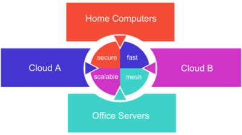

About¶

What is Netmaker?¶
Netmaker is a tool for creating and managing virtual overlay networks. If you have at least two machines with internet access which you need to connect with a secure tunnel, Netmaker is for you. If you have thousands of servers spread across multiple locations, data centers, or clouds, Netmaker is also for you. Netmaker connects machines securely, wherever they are.
{kind=link}
Netmaker takes those machines and creates a flat network so that they can all talk to each other easily and securely. If you’re familiar with AWS, it’s like a VPC but made up of arbitrary computers. From the machine’s perspective, all these other machines are in the same neighborhood, even if they’re spread all over the world.
Netmaker has many similarities to Tailscale, ZeroTier, and Nebula. What makes Netmaker different is its speed and flexibility. Netmaker is faster because it uses kernel WireGuard. It is more dynamic because the server and agents are fully configurable, which lets you handle all sorts of different use cases.
How Does Netmaker Work?¶
Netmaker relies on WireGuard to create tunnels between machines. At its core, Netmaker is managing WireGuard across machines to create sensible networks. Technically, Netmaker is two things:
the admin server, called Netmaker
the agent, called Netclient
As the network manager, you interact with the server to create and manage networks and devices. The server holds configurations for these networks and devices, which are retrieved by the netclients (agent). The server runs an MQTT (message queue) broker for client-server communication.
The netclient is installed on any machine you would like to add to a given network, whether that machine is a VM, Server, or IoT device. The netclient subscribes to the server’s MQ broker, and the server tells it how it should configure WireGuard. The client will let the server know when any local changes should be pushed out to the other clients. By doing this across many machines simultaneously, we create a dynamic, fully configurable virtual networks.
The Netmaker server does not typically route traffic. Otherwise, this would be a hub-and-spoke model, which is very slow. Instead, Netmaker just tells the machines on the network how they can reach each other directly. This is called a full mesh network and is much faster. Even if the server goes down, as long as none of the existing machines change substantially, your network will still run just fine.
Use Cases for Netmaker¶
There are many use cases for Netmaker. In fact, you could probably be using it right now. This list is not all-encompassing, but provides a sample of how you might want to use Netmaker. Guided setup for many of these use cases can be found in the Using Netmaker documentation.
Automate creation of a WireGuard mesh network
Create a flat, secure network between cloud environments and data centers
Provide secure access to IoT devices, remote servers, and client sites.
Secure a home or office network
Add a layer of encryption to an existing network
Secure site-to-site connections
Manage cryptocurrency proof-of-stake machines
Create a dynamic and secure Kubernetes underlay network